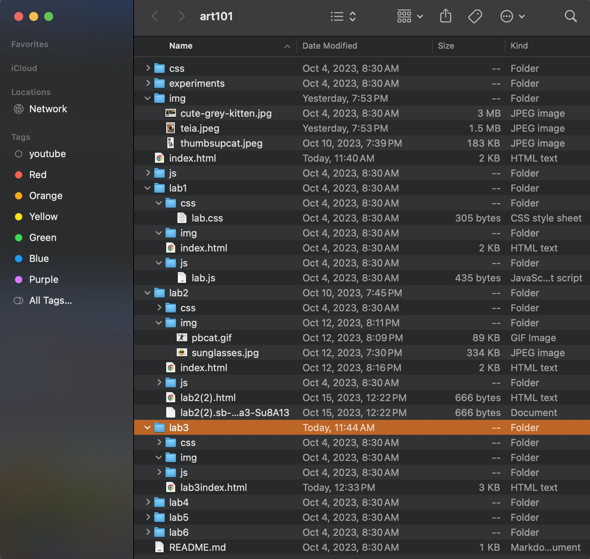

Lab 3 - File structure & file transfer
Challenges
My main challenge I ran into was linking my labs because I fell behind when we were learning how to use lists in our html so I had to go back and relearn from my notes.
Problems
My main problem I encountered came up when I loaded in my homepage after committing and pushing, where I realized I was working on the wrong css page. I was working on the css for this lab and not my homepage, and I didn't know where to find the correct css but after realizing it was just at the very top of my files i was able to navigate it and throw in my css quickly. after testing it in the browser I comitted those changes too. I'm still grappling with my links going to the right pages but that can be fixed easily I just need to organize my pages.
Reflection
This assignment was generally easy, I think the only place I got lost was trying to follow really closely with the screenshots and understanding what was needed to correctly consolidate. I spent a lot of time understanding my code and pages until things finally started to fall into place for me. I feel like I tought myself a lot through this lab and I'm really happy with my ability to hold my own as a coder now, I feel confident that moving foreward I'm equipped with the right tools and knowledge. I'm hoping that soon assignments wont take me as long as they do at this moment but I think that's very much acheivable as I continue to learn.
Results
my resulting page has a successfull image that I've resized, working links and some stylization.
